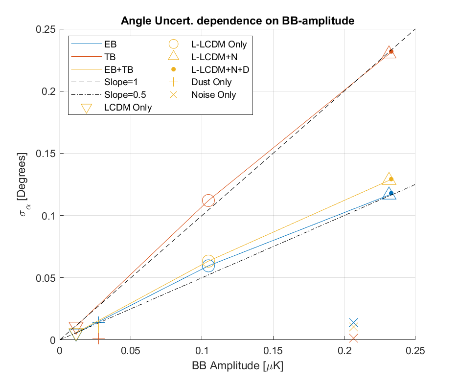

Isotropic Polarization Rotation Analysis: Global Polarization Rotation Fits on Standard B2018 Sims
—
J. Cornelison
This posting is the first of a series which will ultimately lead to the report of constraints on Isotropic Polarization Rotation.
I create 10 B2018 simulations Signal, Dust, and Noise signal types and their combinations and compare them to the 499 BICEP3 B2018 sims created for B2018. I then fit global rotation angles to both sets of sims using standard pipeline code.
Introduction
Coupling of photons to a generic pseudoscalar field results in a rotation of the plane of polarization for linearly polarized light as it propagates through spacetime (For example, see ,). Since the level of rotation is directly proportional to the distance travelled by the photon, the CMB is the arguably the most natural place to look for signals of cosmic polarization rotation.
In the CMB, an isotropic rotation of linearly polarized light be some angle, α, manifests as a leakage between E and B modes in a well-described way
and can result from either astrophysical sources such as cosmic polarization rotation or instrumental systematics such as a miscalibration of the polarization angle of the instrument.
It is customary in our CMB analysis to fit out an angle from our EB and TB spectra using the above model, but without precise measurement of the overall polarization response angle of the instrument we don't know if whatever angle we estimate is a result from some undiscovered physics or a simple deviation of the instrument's polarization response angle from expected.
The scope of this analysis is to combine of our BICEP3 B18 3-year dataset and the RPS-based polarization calibration I performed over January 2022 and report on constraints of isotropic polarization rotation of celestial origin. This is different from previous recent effort that explore spatial or temporal linear polarization rotation -- i.e. this is a constraint on a monopole polarization signal that oscillates slowly on cosmological timescales.
Methodology
The fundamental procedure is fairly straightforward:
Measure the per-detector polarization angle & cross-polar response WRT to gravity using an external calibrator.
Relate as-measured polarization angles WRT to the overall rotation of the focal plane via a pointing model (i.e. compute the χ-angle).
Recreate our real CMB maps using as-measured χ-angles.
Fit for an overall polarization rotation angle, α, via EB/TB minimization (AKA global polarization rotation fits, or self-calibration) -- for more details see [1].
Now that the instrument polarization angles have been measured, any significantly non-zero alpha would imply a polarization rotation originating from some celestial phenomenon.
We can go one step further and rule out galactic dust as the cause by examining the effect of various dust models on our estimation of α, which we plan to discuss in another posting. However, since we have polarization angle measurements for 95GHz only, we cannot rule out physics that would involve frequency scaling of the degree of rotation.
Like our main CMB analysis, we plan to perform systematic tests and establish an uncertainty by comparing our CMB data to simulations of CMB maps which we believe are accurate representations of our real data.
There are, however, a lot of nuances at each step that need to be considered in order to convince ourselves that our results are not biased in any way. This posting focuses on the recreation of B2018 simulations and resulting α fits to EB/TB spectra -- particularly in answering the following questions:
Are the estimates of α for these sims mean-zero as expected?
What is the expected statistical uncertainty on α? What are we limited by?
What is the impact on σα when using fewer than 499 sims?
To that end, the rest of this posting examines the result of fitting α to standard B2018 sims which are expected to have α=0 on average.
Recreation of B2018 Sims
To ensure I could properly run the simulation pipeline, I created a small set of CMB simulations using the same inputs as B2018 to ensure I have sufficient knowledge over how the pipeline works.
The pager below shows EB/TB angular power spectra (APS) for both B2018 (sernum 3553) and my sims (B2018-rerun, sernum 6600) where I visually compare the means. To see if it can improve the fits to EB/TB spectra, I also apply the B18 purification matrix -- which was created from the combined B2016, B2017, and B2018 -- to both sets of sims.
B2018 - the ensemble of 499 B2018 sims created for the BK18 analysis (i.e. sernum: 3553, daughter: h)
B2018-rerun - An ensemble of 10 B2018 sims I ran myself (sernum: 6600, daughter: h).
A pager of EB/TB APS of my 10 sims compared to the 499 sims generated for B2018. The gray lines indicate one realization and the black line indicates the mean of all realizations per-ell.
Switching between the two simsets for any signal-type, we can see that my reproduction was successful. We can also see qualitatively that the purification matrix does a great job of reducing E-to-B leakage which should reduce the variance on α estimates.
Global Polarization Rotation fits to B2018 Sims
Now I perform the global rotation fits on each of the sims.
I estimate α for each individual sim following the procedure outlined by Eric Bullock in :
Load in a real final file and sim APS.
Apply the suppression factor from the real data to the sim APS.
Swap the real APS for the sim APS in the final file.
Pass the final file through reduc_global_rotation to fit for the angle.
This method ensures that each simmed APS has the same suppression factor and bandpower window function (BPWF) applied as the real data and also that the fit is properly normalized by the bandpower covariance matrix (BPCM).
Example pager
The first thing to note is that the while distribution of angles for non-purified TB is consistent with zero given the width of the distribution, the mean is quite far from zero compared to the error-on-the-mean which is interesting. Second, the standard deviation of the EB+TB fits do not match what we'd expect from leveraging both spectra, i.e.:
\begin{equation}
\sigma_{EB+TB} = \frac{1}{\sqrt{\frac{1}{\sigma_{EB}^2}+\frac{1}{\sigma_{TB}^2}}}
\end{equation}
which for B2018 Matrix-purified L-LCDM, for instance, is expected to be ~0.085° compared to 0.1°.
We can see that the mean of α is brought closer to zero with matrix purification, so perhaps this is a result of using a matrix that was intended for B18 on a similar-but-not-equal data subset. It would also be worth verifying that the estimator gives expected values for a toy model of EB/TB spectra with similar statistical properties determined by the BPCM. In future postings, we'll check the former hypothesis by fitting α to coadded B2018 matrix purified sims and the latter problem by fitting α's to psuedosims created from the BPCM.
Fractional uncertainty when going from 499 to 10 sims
The uncertainty on the standard deviation of a distribution when drawing N samples from a parent distribution with width σ is:
In table 2.1, I compare the mean and 1-σ standard deviations for the alphas fit from EB between the standard 499 B2018 and my 10 sims (with no purification). We should expect the standard deviations on B2018-rerun to fluctuate around ±20% of B2018 and that appears to be the case here.
EB
TB
EB+TB
B2018
B2018-rerun
B2018
B2018-rerun
B2018
B2018-rerun
Signal
Mean (°)
STD (°)
Mean (°)
STD (°)
Mean (°)
STD (°)
Mean (°)
STD (°)
Mean (°)
STD (°)
Mean (°)
STD (°)
2
-0.00
0.00
-0.00
0.00
-0.00
0.01
-0.00
0.01
-0.00
0.00
-0.00
0.00
3
0.00
0.00
0.00
0.00
0.00
0.00
0.00
0.00
0.00
0.00
0.00
0.00
5
-0.01
0.05
-0.00
0.06
-0.01
0.09
0.01
0.10
-0.01
0.05
-0.00
0.06
6
-0.00
0.01
0.00
0.01
0.00
0.00
0.00
0.00
-0.00
0.01
0.00
0.01
7
-0.01
0.10
-0.01
0.07
-0.02
0.18
-0.05
0.15
-0.01
0.11
-0.02
0.07
8
-0.01
0.10
-0.01
0.08
-0.02
0.19
-0.05
0.16
-0.01
0.11
-0.02
0.08
Scaling relation between absolute BB Amplitude and σα
In the figure below, I plot the 1-σ standard deviations of α as a function of the uniform mean of the square root of the BB bandpowers of all 499 realizations in B2018. We can see that σα scales as ~1 for $\sqrt{D_{\ell}^{BB}}$ for the TB-only fits and as ~0.5 for the EB-only fits -- but only for APS with CMB signal in them.

Conclusions
By fitting rotation angles to our standard suite of sims, we now have answers to the questions we asked in §1:
Are estimates of α for these sims zero as expected?
Estimates are all consistent with zero within the standard deviation, but not within the error-on-the-mean.
Given that matrix purification improves this, it's possible that this inconsistency can be attributed to imperfect cleaning of the E→B leakage due to mode-mixing, perhaps from using a purification matrix that was intended for the 3-year dataset on a single year's data.
Follow-ups to this are: seeing if non-zero means are still present when using toy models of uncorrelated sample variance in EB & TB spectra; and seeing if the mean α in the three-year dataset exhibits the same symptoms.
What is the expected statistical uncertainty on α? What are we limited by?
We can see from Figure 3.1 that, in the absence of dust and noise, our absolute minimum uncertainty is σα~0.05° from lensing. If we want to go lower, we'd need to delense.
In the B2018, we are dominated by in BB power by noise by a factor of ~3 at ℓ=200. A rough estimate tells me that we'll still be dominated by noise using using the three-year dataset by a factor of ~2 assuming BB power drops as 1/√N.
What is the impact on σα when using fewer than 499 sims?
The scatter on α histograms appears to be within 20% of what we expect of the scatter given by our 499 sims. This should be sufficient for doing case studies and testing of different parts of the pipeline. However, I think for purpose of doing jackknifes and calculating our final uncertainties, we'll want to create a full suite of 499 sims.
Next Steps
An immediate follow-up to this posting will be fitting α to B2018 simulations which use different angles in the TOD and mapmaking phases.
Appendix
Footnotes
Click on the number to return to the main text.
[1]
A more recent global rotation posting for BK18 exists, but to remain blind in this analysis I have not looked at it and do not link it here.